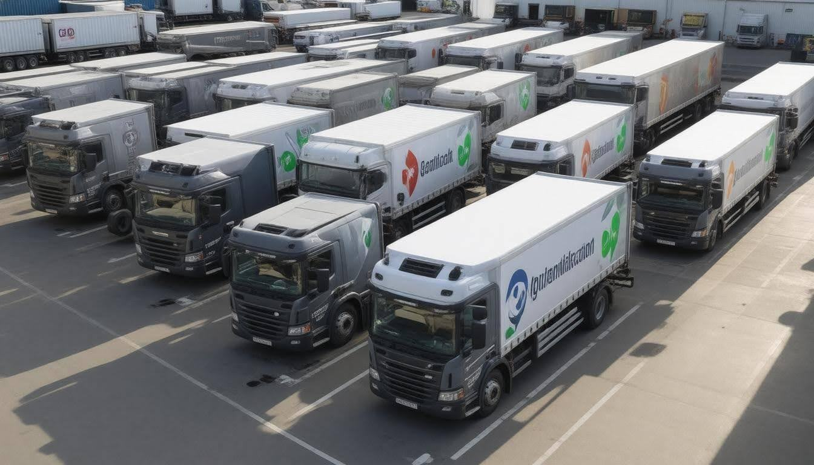

In today's fast-paced world, managing a fleet of vehicles is no small task, especially when it comes to keeping fuel costs in check. Any fleet manager knows that optimizing fuel efficiency is not just about the numbers; it's essential for both saving money and protecting the environment. Strategies like adopting smarter driving habits and utilizing technology have proven to be game-changers. But with so many practices out there, where do you start? Whether you're overseeing a dozen delivery vans or a hundred long-haul trucks, finding practical solutions can make a huge difference in your operations. In this article, we’ll explore effective strategies that can help you improve fuel efficiency and ensure your fleet runs smoothly without breaking the bank.
To enhance fuel efficiency in fleet vehicles, consider implementing strategies such as using fuel tracking technology to monitor consumption, choosing the most efficient routes to minimize distance traveled, and discouraging aggressive driving habits. Regular vehicle maintenance and reducing unnecessary cargo weight can significantly help in improving overall MPG. 
Among the best strategies for improving fuel efficiency in fleet vehicles, fuel tracking technology stands out as essential. Implementing software like FUELChex allows for real-time monitoring of fuel usage. This means managers can track consumption by job, identify anomalous patterns that may indicate fraud, and generate exportable data for comprehensive analysis. By understanding precisely how much fuel each vehicle is consuming under various circumstances, fleet operators can make informed decisions on where to improve.
Equally essential is the attention given to driving behavior.
Encouraging smoother driving habits among your drivers can yield remarkable outcomes. Studies have shown that promoting techniques like gentle acceleration and braking can improve fuel efficiency by up to 20%. Training programs focused on eco-driving not only save money at the pump but also enhance road safety, as careful driving reduces the risk of accidents. Integrating these training sessions into onboarding processes creates an ongoing culture of awareness around fuel efficiency.
Another often-overlooked strategy focuses on cargo management—specifically, eliminating extra weight from vehicles. Every pound counts; less weight directly translates into better mile-per-gallon (MPG) figures. Regular vehicle cleanouts to remove unneeded equipment or supplies, combined with optimal cargo placement ensure each truck operates at peak efficiency.
For example, technological equipment left stacked away behind seats or unreturned supplies can add up over time. One fleet manager noted a 3% improvement in MPG after conducting a systematic cleanup of all vehicles.
It's not just about what’s inside the vehicle; how drivers manage other aspects while on the road matters too.
Another practice worth adopting is educating drivers on when and how to use air conditioning wisely. Given its impact on fuel economy, helping drivers understand the balance between comfort and MPG efficiency is key—to set air conditioners efficiently or open windows thoughtfully on cooler days can lead to noticeable savings in consumption. By becoming conscious about these regular choices, your fleet can optimize every journey without sacrificing comfort.
Lastly, where vehicles fill up can greatly influence operational efficiency. Using cardlock fueling stations provides detailed transaction summaries and may consolidate many expenses under a single umbrella provider—which helps finance teams keep closer tabs on spending trends while reducing instances of fraudulent activity at the pump.
The ability to access purchase history allows fleet managers to analyze patterns and optimize purchasing strategies, ensuring they are taking advantage of savings opportunities whenever possible.
As we turn our focus to maintaining those efficiency gains, it becomes clear how proactive measures play a critical role in preserving performance long-term.
Consistent maintenance is the backbone of fleet vehicle efficiency. Think of it as giving your vehicles the care they deserve to keep running smoothly. When maintained regularly, vehicles can operate at peak performance, translating into better fuel economy and lower repair costs over time.
One of the first steps in proactive maintenance is ensuring that tire pressures are always at their recommended levels. Under-inflated tires can significantly impact fuel efficiency, potentially reducing mileage by up to 3%. It's truly amazing how something as simple as checking tire pressure regularly can save money and enhance performance.
Another key area to monitor is oil changes. Using the right motor oil, as specified in your vehicle’s manual, can yield a fuel efficiency improvement of 1-2% for every 5,000 miles driven. Scheduling these changes at regular intervals prevents engine wear and ensures smooth operation.
In addition to these components, scheduled inspections should not be overlooked. These inspections often catch potential issues before they escalate into costly repairs or serious breakdowns, keeping all vehicles on the road longer and reducing downtime.
Establishing a routine for preventative maintenance is vital. You might set reminders for yourself or employ fleet management software to track schedules, mileage, and service needs. Such organizational tools ensure you don’t overlook any critical maintenance tasks.
With a solid routine in place, you're positioning your fleet for success while also setting the stage for driving behaviors that further enhance fuel efficiency.
Driving behavior has a profound effect on how much fuel a vehicle consumes. Every time a driver stomps on the gas pedal or slams on the brakes, they're not just causing their vehicle to consume more fuel; they’re also impacting the wear and tear on their machine.
Adopting smoother driving practices—like gradual acceleration and steady braking—can dramatically enhance fuel efficiency, sometimes improving it by as much as 20%.
In fact, aggressive driving behaviors such as rapid acceleration and hard braking can reduce fuel economy by an astonishing 10-40%. This isn't just a small number; it's a significant financial burden for fleet operators. When monitoring reveals that one driver is consistently achieving lower miles per gallon compared to their peers, it can lead to targeted coaching and training. Simple adjustments in driving style can make a considerable difference not just in emissions, but in the bottom line.
This isn't merely about telling drivers to ease off the gas; cultivating smoother practices requires a cultural shift. Picture it: two drivers along the same route—one darting ahead with aggressive starts and stops; the other gliding smoothly along. Such contrasts can equate to a staggering loss of 2 miles per gallon for the aggressive driver. Fleet operators who prioritize driver education and real-time monitoring witness substantial savings through behavioral modifications.
"Recognizing when to cruise at a constant speed or when gentle acceleration is appropriate can be game-changing for fleets."
These strategies extend beyond mere economics—they promote safety as well. A gradual approach allows drivers to anticipate their surroundings better, reducing the likelihood of sudden stops and potential accidents. Moreover, using cruise control on highways enhances fuel efficiency by around 14%, making long trips more economical while also promoting consistent speeds that contribute to less driver fatigue.
Besides direct training focusing on smooth driving techniques, employing telematics solutions offers deeper insights into driving patterns. With detailed reports on accelerating habits and braking instances, fleet managers can tailor feedback specific to each driver’s habits, fostering a supportive environment for improvement.
However, that’s just one facet of effective driving habits. Maintaining proper tire pressure is crucial; every 1 PSI drop impacts fuel efficiency by approximately 3-4%. Regular checks keep tires inflated correctly—this minor adjustment leads not only to better fuel economy but also increases tire lifespan.
With this understanding of effective driving habits firmly established, we can now explore how comprehensive educational initiatives transform these concepts into practical routines for operators.
Investing in driver training programs is not just a box to tick; it's an essential strategy for improving fuel efficiency across your fleet. When drivers are educated about fuel-efficient driving behaviors, they develop habits that translate into tangible savings on operational costs. This training can cover everything from proper maintenance practices to driving techniques that maximize fuel economy, ensuring that both the vehicle and the driver perform optimally.
One effective approach is to kick off the program with workshops that focus on practical skills and real-life situations drivers may encounter. These workshops should touch on critical topics such as smooth acceleration and braking, the importance of maintaining steady speeds, and the technique of using cruise control effectively. Drivers trained to accelerate gradually and brake softly often report fuel savings of 10-20%, simply by being more aware of their impact on fuel consumption.
Take, for instance, a logistics company that saw a remarkable 20% improvement in fuel efficiency after implementing mandatory training sessions for its drivers. This transformation wasn't just a fluke; it reflected how consistent education can reshape behaviors behind the wheel. Such solid results demonstrate that teaching operators the value of their actions leads to reduced costs and enhanced overall fleet performance.
Furthermore, encouraging ongoing education is crucial. Implement monthly refresher courses or quarterly workshops focusing on new technology or methods that could help boost fuel efficiency even further.
Beyond initial training, integrating telematics systems offers another layer of optimization. These systems provide real-time feedback to drivers about their performance, allowing them to evaluate their driving habits alongside the training received. By continuously monitoring metrics such as speed, idling time, and harsh braking incidents, companies can identify areas where drivers need additional guidance or support.
Moreover, tying in a rewards system can further incentivize good behavior among drivers. Recognizing those who consistently demonstrate fuel-efficient practices fosters a positive culture and motivates all employees to strive for better performance.
However, the key lies in maintaining open communication about the benefits of these efforts—not just numbers on a spreadsheet but how they contribute to reducing emissions and cultivating responsibility towards environmental sustainability.
Investing in comprehensive driver training programs and leveraging technology for ongoing development creates lasting changes that dramatically improve fuel efficiency. It's not just about saving money; it's about building a culture of excellence that benefits everyone involved—drivers, management, and the environment alike.
As we explore further advancements in improving operation outcomes, considering strategic technological advancements will prove pivotal in enhancing fleet performance.
At the heart of modern fleet management lies an array of advanced technologies ready to revolutionize how companies operate. One standout is the integration of telematics systems, which enables fleet managers to harness real-time data effectively. Imagine having the power to monitor your vehicles' location, speed, and fuel consumption at your fingertips; this capacity allows for smarter decision-making regarding route optimization and scheduling. Companies leveraging telematics have reported impressive savings, with average reductions of 10-20% in fuel consumption. This isn't mere conjecture; it's a tangible result of being informed and responsive.
Beyond telematics, there are even more innovative technologies worth considering. For example, automatic tire-inflation systems ensure that tires are always at optimal pressure. When tires are properly inflated, they not only enhance safety but also significantly improve fuel efficiency—another compelling way to cut costs while maintaining performance. Moreover, deploying advanced driver-assistance systems (ADAS) can further support fuel-saving efforts by promoting safe driving habits. These systems can provide feedback on driving behaviors such as speeding or harsh braking, both of which contribute to increased fuel usage.
Regularly monitoring these advancements aids not just in immediate fuel savings but also contributes to long-term sustainability goals—an increasingly essential aspect of fleet operations today.
As technological solutions evolve, fleet managers must be proactive about integrating these tools into their operations. New software platforms continually emerge to analyze data effectively and offer actionable insights. By continuously keeping track of fuel trends and vehicle performance, companies can identify issues before they escalate into problems that affect productivity or cost efficiency.
With 2024 seeing more stringent sustainability regulations and heightened awareness around environmental impacts, investing in technology that promotes fuel efficiency has never been more critical. Fleet managers who embrace these changes not only position themselves ahead of regulatory requirements but also gain a competitive edge within their industry.
In this tech-driven landscape, targeted investments pave the way for improved operational efficiency and responsiveness, setting the stage for effective assessment in tracking fuel-related metrics moving forward.
Constantly keeping track of fuel usage goes far beyond merely glancing at the numbers—it’s about uncovering hidden insights. Consider a fleet manager who receives weekly reports on fuel consumption across all vehicles. By analyzing why certain vehicles consume more fuel, they might discover that specific routes are less efficient or that certain drivers accelerate aggressively, both of which significantly affect overall consumption.
Many fleets now leverage sophisticated tools such as fuel cards, providing detailed transaction data that reveals cost per refill, frequent refueling locations, and times when consumption spikes. These data points become invaluable for assessing patterns in fuel use. For example, if a fleet notices multiple transactions in a single day for one vehicle, it raises a red flag, prompting an investigation into potential inefficiencies or fraud.
| Mechanism | Benefit |
|---|---|
| Fuel Cards | Detailed transaction data enables better decision-making and fraud detection. |
| Telematics Systems | Offer real-time monitoring of fuel usage and driver behavior. |
| Data Analytics | Help identify trends and pinpoint inefficiencies with actionable insights. |
As teams invest time into understanding these metrics, they're often surprised to find opportunities for improvement that they would have otherwise overlooked.
Good management also involves adopting telematics systems for real-time monitoring of operational performance. With these systems, managers receive instant alerts about fuel consumption anomalies or instances of idling. The benefit? Fleet operators can reach out promptly to remind drivers about best practices like turning off the engine while waiting or maintaining appropriate speeds.
Imagine receiving an alert that one of your drivers kept their vehicle idling while chatting with friends during lunch break—it's unexpected “fuel” for thought!
Another powerful tool in this realm is data analytics, which helps identify longer-term trends related to fuel usage. Through careful analysis, managers can spot systemic issues—for instance, determining whether certain types of vehicles consistently underperform in terms of fuel economy compared to others in the fleet. This data informs decisions not just on maintenance and operational practices but also when considering future vehicle acquisitions.
Ultimately, consistent monitoring ensures strategies are continually adjusted for optimal performance; however, this requires dedication from every team member toward achieving enhanced fuel efficiency. Through training programs on best driving practices, clear communication regarding the importance of fuel conservation, and fostering a culture where everyone takes ownership of their role in reducing costs and improving efficiency, companies gain maximum benefit from closely monitoring their fuel consumption.
In this effort to boost fuel efficiency, commitment and awareness from every team member make all the difference in maximizing savings and operational effectiveness across the fleet.